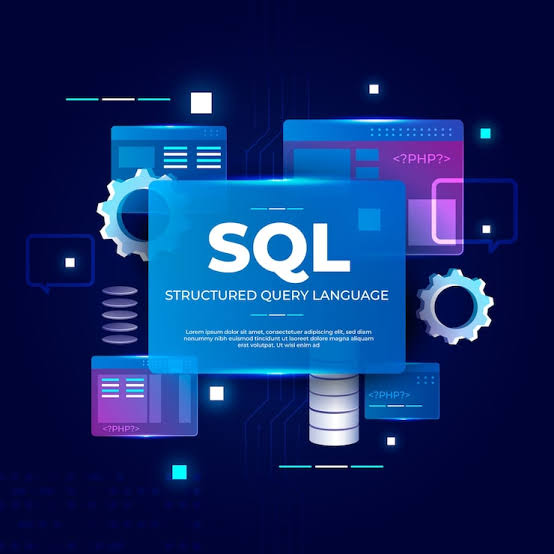

Kijk eerst naar dit filmpje voordat je de tekst leest over wat SQL is.
Een uitleg video over wat SQL is.
SQL is bedacht in de jaren 70 door onderzoekers bij IBM. Donald Chamberlin en Raymond Boyce speelden een belangrijke rol bij de ontwikkeling ervan. SQL staat voor Structured Query Language.
Het is een taal waarmee je gegevens in een database kunt opslaan, bekijken en aanpassen.SQL werd bedacht om grote hoeveelheden gegevens makkelijker te kunnen beheren en terug te vinden.

SQL wordt gebruikt wanneer iemand gegevens in een database wil opslaan, bekijken of aanpassen. Een database is een plek waar gegevens overzichtelijk worden bewaard, bijvoorbeeld in tabellen op een computer.
SQL wordt bijvoorbeeld gebruikt voor:
- Gegevens opslaan, zoals nieuwe producten toevoegen aan een webshop.
- Gegevens opzoeken, zoals de prijs van een product.
- Gegevens aanpassen, zoals de voorraad van een product veranderen.
- Gegevens verwijderen, zoals een product uit een database halen.
Tegenwoordig wordt SQL gebruikt bij veel verschillende systemen, zoals webshops, banken en bedrijven die grote hoeveelheden gegevens moeten bewaren en beheren.
Mijn eigen ervaring met SQL was dat ik het erg makkelijk vond en dat het een leuke opdracht was om te maken. Toch was SQL niet de leukste code die ik heb geleerd.
Dit komt doordat ik de opdrachten soms iets te makkelijk vond en er niet genoeg uitdaging in zat. Ik heb wel geleerd hoe je gegevens in een database kunt opslaan, opzoeken en aanpassen.
Uit de 3 codes die ik al geleerd heb, staat deze op plaats 2.